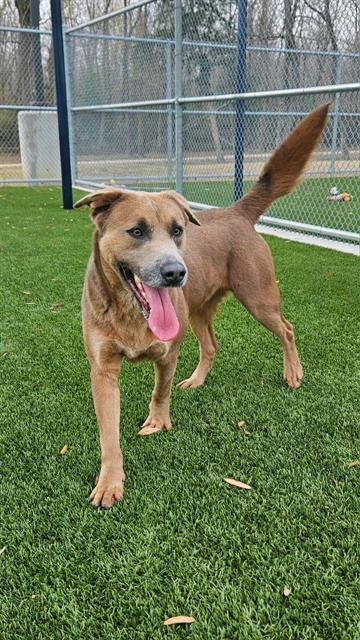
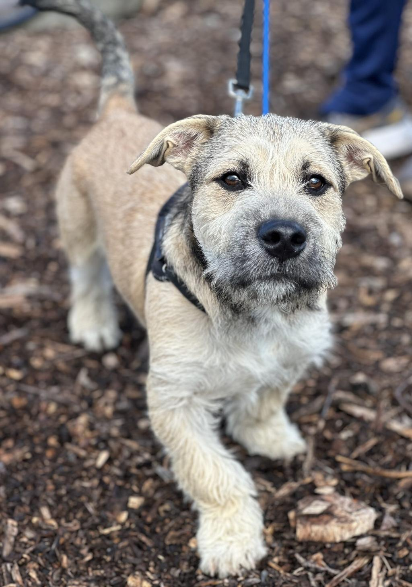
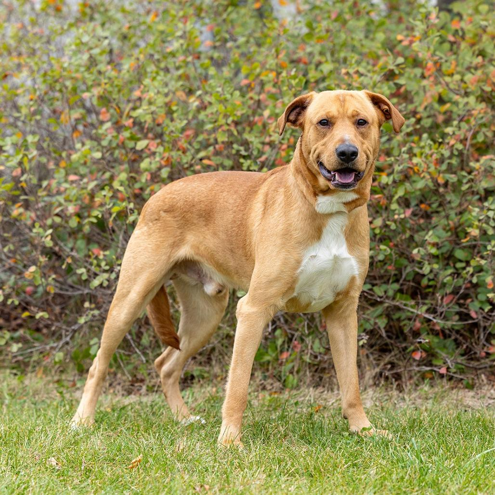

Buddy
Age: 2 years | Breed: Mixed | Friendly, energetic, great with kids.
Giving rescued dogs a second chance at life
Every dog at Paws Haven has been rescued, medically treated, and assessed for temperament before being made available for adoption. Below are just a few of the dogs currently looking for their forever home.

Age: 2 years | Breed: Mixed | Friendly, energetic, great with kids.

Age: 4 years | Breed: Terrier mix | Calm, affectionate, loves cuddles.

Age: 1 year | Breed: Labrador mix | Playful, needs an active home.